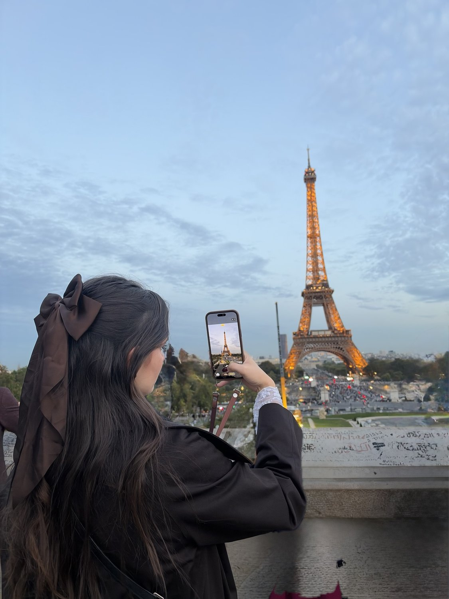
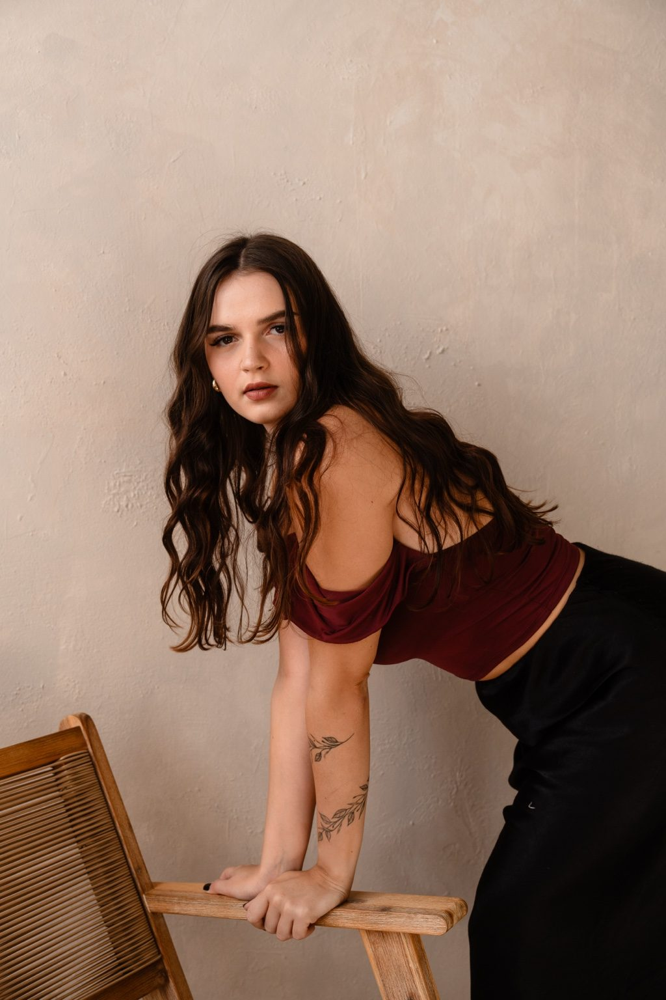
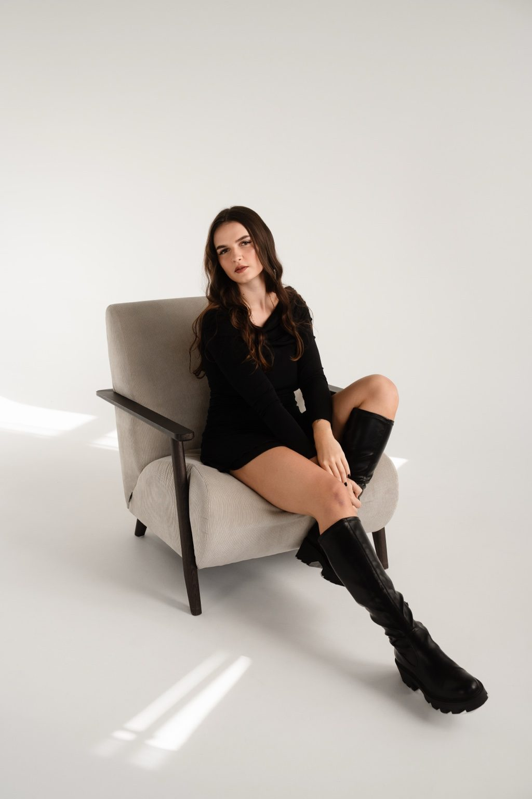
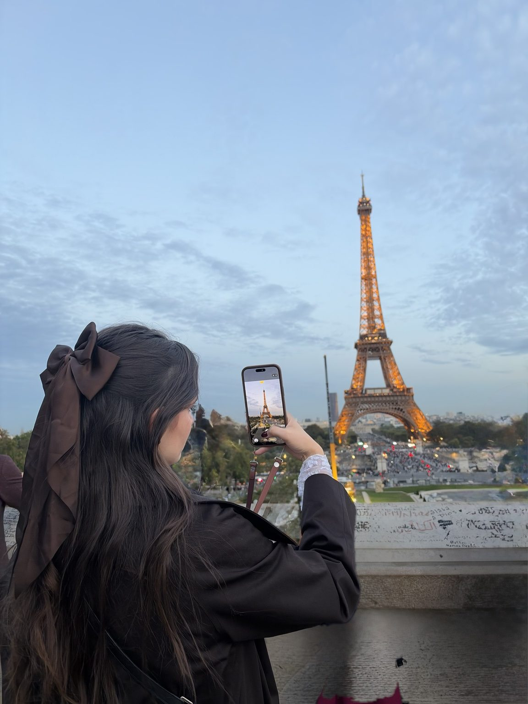
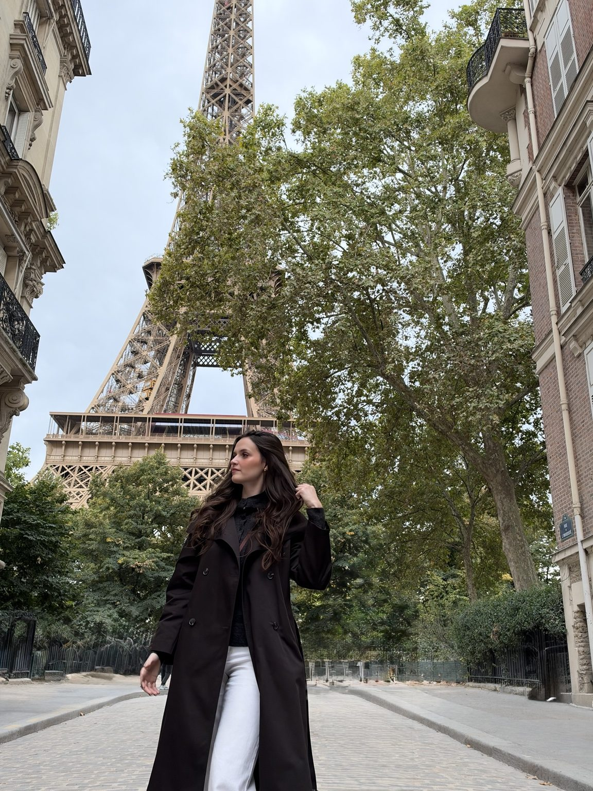
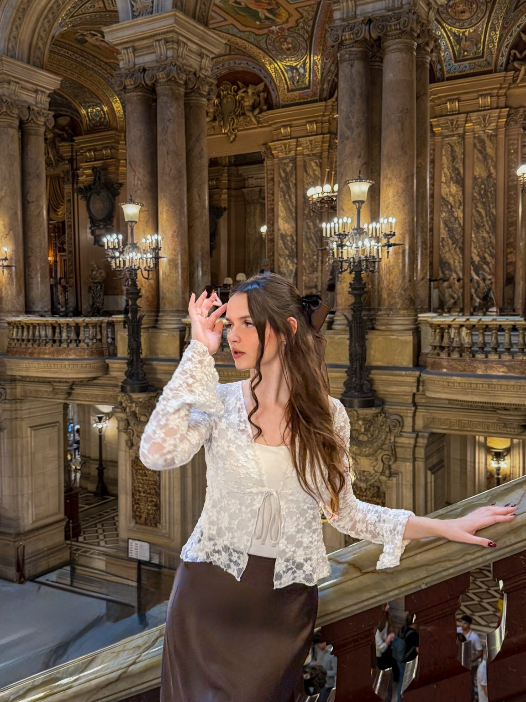
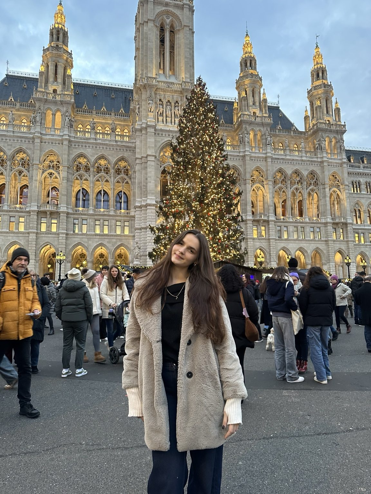
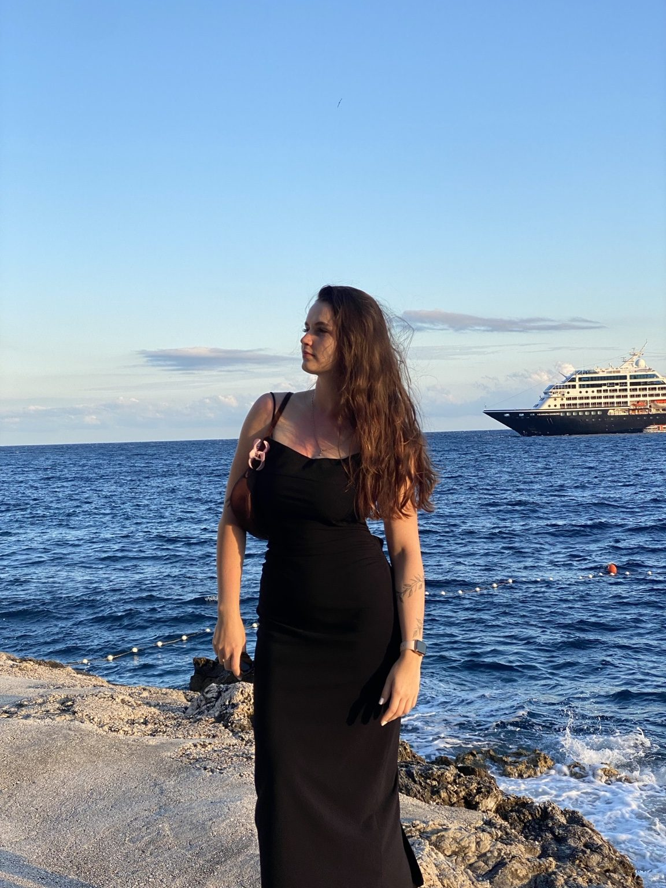
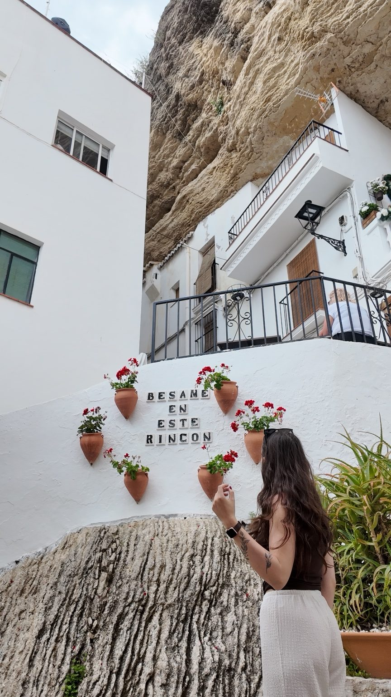
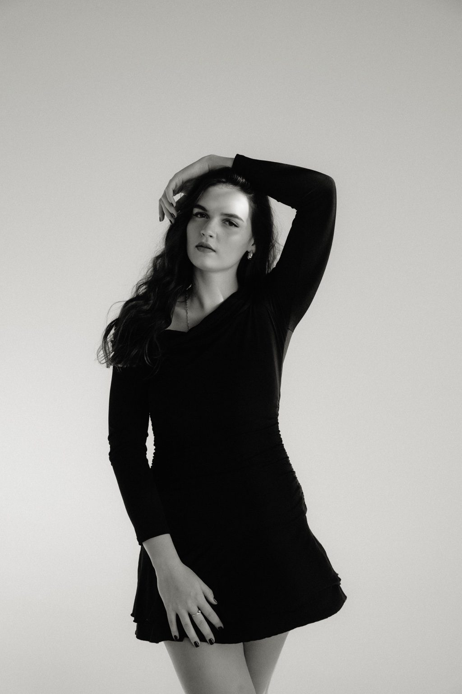

Travel / Original video
Moje nagranieLittle moments
Podróżnicze kadry — te, które później oglądam po kilka razy.
i montaż
Kocham podróże, dobre historie i ten moment, kiedy zwykły dzień zamienia się w coś wartego nagrania.
Explore my world ↓
Jestem ambitna, towarzyska i raczej nie należę do osób, które potrafią długo usiedzieć w jednym miejscu. Lubię poznawać ludzi, ich historie i nowe kultury. Zdarza mi się spontanicznie zmienić plany, ale kiedy trzeba coś zorganizować, włącza mi się tryb „ogarniamy”.
Mam mnóstwo różnych zainteresowań i chyba właśnie to najbardziej lubię w sobie. Kocham ludzi, bywam wrażliwa, ale nie boję się wyzwań ani trudniejszych decyzji.
Dużo frajdy daje mi też wymyślanie rozwiązań, które ułatwiają codzienność. Nawet w zwykłych obowiązkach od razu zastanawiam się, czy nie dałoby się zrobić czegoś prościej.


W podróżach uwielbiam tę wolność, kiedy na chwilę zapominam o obowiązkach. Najchętniej skręcam w nieznane uliczki, poznaję ludzi i po prostu chłonę atmosferę miejsca. Nie muszę mieć planu na każdą minutę.






W Paryżu trafiłam na chłopaka, który przepięknie śpiewał przy Trocadéro. Zaczęliśmy rozmawiać i… skończyło się na tym, że razem zaśpiewaliśmy pod wieżą Eiffla. Dopiero później okazało się, że jego kolega, profesjonalny fotograf, nagrał całą sytuację. Dostałam ten filmik na pamiątkę. Takie nieplanowane historie są dla mnie najlepszą częścią podróżowania.
Zaczęło się, kiedy miałam jakieś 11–12 lat i godzinami oglądałam YouTube’a — filmiki z Minecrafta, Littlemonster, Andziaks… i tak, trochę mi to zostało do dziś XD.
W liceum sama zaczęłam bawić się social mediami. Później poszłam na marketing i sprzedaż, a w pracy nagrywanie rolek stało się moim ulubionym „side questem”. Największą frajdę daje mi szukanie ciekawych kadrów, zabawa kolorami i moment, kiedy wszystko składa się w gotowy film. Lubię być zarówno za kamerą, jak i przed nią.
Wszystkie filmiki poniżej są mojego autorstwa.
Podróżnicze kadry — te, które później oglądam po kilka razy.
Ujęcia z podróży, światło, kolory, małe detale.
Lubię złapać nie tylko miejsce, ale też jego atmosferę.
Wieczorne światło potrafi zrobić cały klimat filmu.
Krótki film modowy — od pomysłu po własny montaż.
Taniec to jedna z tych rzeczy, które po prostu kocham.
Ruch, energia i spontaniczność — kolejna część mojego świata.
Poza podróżami najchętniej tańczę albo śpiewam. Lubię ruch i chyba nie ma sportu, którego nie chciałabym chociaż spróbować. Interesuję się też modą i fotografią — dlatego sesje zdjęciowe są dla mnie kolejną okazją do zabawy obrazem, tym razem przed obiektywem.
A czasem? Ugotuję coś dobrego, włączę thriller albo porządne romansidło i przez cały wieczór nie ruszam się z kanapy. Też potrzebuję takich momentów.

Nie lubię nudy ani robienia codziennie dokładnie tego samego. Najlepiej czuję się tam, gdzie dużo się dzieje, są ludzie, nowe pomysły i coś do ogarnięcia.
W RedEye prowadzę sprzedaż i koordynuję projekty od początku do końca. Praca pod presją nauczyła mnie szybkiego reagowania, rozmów z różnymi ludźmi i szukania rozwiązań nawet wtedy, gdy plan się zmienia.
Nagrywałam i montowałam rolki dla firmowych profili, zajmowałam się też kampaniami Meta Ads. Obsługa sprzętu, w tym DJI Osmo Pocket, nie jest mi obca.
Uwielbiam wymyślać procesy, które ułatwiają pracę. Lubię sprawdzać nowe narzędzia, także AI, ale zawsze po to, żeby coś realnie usprawnić.
W lipcu 2026 obroniłam licencjat z marketingu i sprzedaży, a teraz studiuję ten sam kierunek na magisterce. To połączenie kreatywności i organizacji, które bardzo mi pasuje.
Marzy mi się praca, w której mogłabym łączyć tworzenie contentu z koordynacją projektów w świecie influencerów — pomagać w realizacji pomysłów, brać udział w różnych przedsięwzięciach i uczyć się tego od środka.
Jeśli szukasz osoby, która lubi tworzyć, ogarniać i naprawdę angażuje się w to, co robi — chętnie się poznamy.